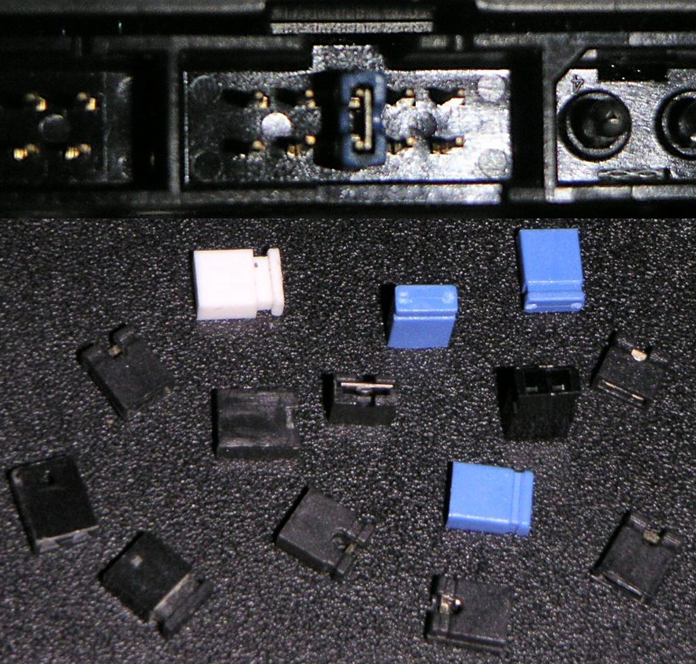

Configuració, proves i documentació del muntatge
La configuració, proves i documentació del muntatge és l’últim pas que cal fer, però marcarà el rendiment adequat de l’equip. D’una banda, cal configurar els dispositius de maquinari perquè funcionin correctament, en tots els casos en què la configuració no sigui automàtica, utilitzant diverses eines com són la configuració directa del maquinari (jumpers) o l’ajustament del programa BIOS, que s’encarrega de la comunicació bàsica amb els components de maquinari.
D’altra banda, cal documentar adequadament tot el muntatge realitzat per tal d’entregar l’equip al destinatari amb tota la informació necessària que li permeti tenir un bon coneixement de la màquina, i també més facilitat a l’hora de reparar-la si es dóna el cas.
En darrer lloc realitzarem una sèrie de proves de rendiment o benchmarks, que més enllà del funcionament correcte o no dels dispositius ens dirà si el funcionament és òptim o si alguns components no estan completament acoblats i, per tant, caldria optimitzar la configuració de l’equip.
En l’etapa de validació de l’equip haureu de configurar els dispositius, documentar el muntatge realitzat i comprovar-ne el bon rendiment mitjançant proves comparatives.
Configuració del maquinari
Quan ja s’ha muntat i verificat, i abans d’instal·lar qualsevol sistema operatiu, cal configurar el maquinari per a adaptar-ne les característiques a allò que es necessita, com poden ser tipus de perifèrics detectables, estat del teclat en arrencar, dispositiu d’arrencada primari, i totes les característiques que permetin un ús més acurat del maquinari i més adaptat a la finalitat de l’equip.
El procés inclou la configuració directa del maquinari mitjançant ponts físics o jumpers, la modificació si escau del setup de la BIOS (programa de configuració bàsic), i també la instal·lació i configuració posterior dels controladors de dispositiu, que dependran del sistema operatiu que s’hagi instal·lat.
Els jumpers o ponts
En l’electrònica i en particular la informàtica, un pont és un tram curt de conductor que s’utilitza per a tancar un circuit elèctric. Els ponts se solen utilitzar per a configurar o ajustar circuits impresos, com ara plaques base, targetes gràfiques o discos durs.
- 
- Jumpers
Les primeres generacions d’ordinadors personals en general feien servir molt els ponts per a la seva configuració, encara que sovint la configuració no estava ben documentada i, per tant, es feia difícil d’establir-la correctament. Per exemple, una placa base del principi del 386 d’Intel podia tenir fins a trenta o quaranta ponts de configuració. Típicament, a cada pont s’assigna una etiqueta amb un nombre, que està documentada en una llista d’instrucció impresa en la placa base o en el manual.
La tendència recent ha estat la de tractar d’eliminar per complet els ponts dels dispositius del maquinari en favor de l’autoconfiguració o del control per programari de configuració. Les configuracions poden ser emmagatzemades en la NVRAM, carregades per un processador o negociades en el moment d’inicialització del sistema. En alguns casos, els dispositius connectables en calent són capaços de negociar la seva configuració mentre el sistema està funcionant. Els dissenys amb ponts tenen l’avantatge que solen ser ràpids i fàcils de configurar, sovint requereixen pocs coneixements tècnics, i es poden ajustar sense tenir accés físic al circuit imprès (però sí, al component).
La posició del pont en un disc dur IDE determina si funciona com a mestre, esclau o cable select.
En canvi, els sistemes que utilitzen targetes amb els ponts físics tendeixen a ser configurats correctament pels usuaris finals, ja que en general les persones no tècniques estan menys disposades a modificar físicament la configuració del maquinari que experimentaran amb la configuració del teclat. També tenen l’avantatge que en general només s’han de fixar una vegada, mentre que la configuració del microprogramari o firmware pot ser fàcilment perduda o danyada per un usuari descuidat, un virus o un error d’energia. L’única manera de modificar una configuració correcta del pont és canviant això físicament.
En els equips més moderns, l’ús més comú dels ponts és en la configuració del mode de funcionament de les unitats IDE/ATA (mestre, esclau o cable select).
Una utilitat important dels ponts en les plaques base actuals és que es pot esborrar la informació de la memòria CMOS quan volem restaurar la configuració de la BIOS. Això permet arrencar l’equip amb la configuració inicial en cas que doni problemes d’arrencada o que hàgim oblidat la contrasenya del setup de la BIOS.
També s’utilitzen en la configuració de discos IDE com a mestre/esclau, depenent de les indicacions del fabricant (figura). En unitats de disc SATA2, els ponts poden servir per a ajustar el funcionament del dispositiu a velocitats corresponents a SATA1 si el controlador només suporta aquest mode de funcionament.
La BIOS
El nom BIOS és l’acrònim anglès de basic input-output system, que podem traduir com sistema bàsic d’entrada/sortida.
Fabricants de BIOS
Els productors més importants actualment són American Megatrends (AMI), Insyde Software i Phoenix Technologies.
El BIOS és un subsistema de l’ordinador ubicat en un xip de la placa base. Aquest xip conté microprogramari (firmware, en anglès) allotjat bàsicament en memòria EPROM (erasable programmable read only memory) i memòria de tipus flaix (flash memory) no volàtil, que pot ser esborrable i reprogramable elèctricament.
El BIOS s’encarrega, en primera instància, de detectar i comprovar tots els components connectats a l’ordinador per oferir connexió d’aquests cap al sistema operatiu. Aquest procés s’anomena POST (power-on self-test).
Podeu consultar el procés POST en l’apartat “Muntatge d’un equip” d’aquesta unitat.
La configuració del BIOS es pot realitzar per mitjà d’una interfície d’aplicació no visual que es pot carregar en iniciar l’ordinador, normalment prement una tecla. La majoria de sistemes usen Esc, Del, F1, F2, Ctrl-Esc o Ctrl-Alt-Esc per a entrar en el setup. Habitualment podreu veure una línia de text en la part baixa de la pantalla en engegar el sistema, que us indicarà “Press ___ to Enter Setup”. Heu d’estar atents a aquest missatge si no coneixeu la combinació de tecles correcta.
Les funcionalitats més habituals i útils són les següents (figura):
- Canviar la data i hora del sistema.
- Visualitzar i configurar els dispositius d’emmagatzematge (disquets, discos durs, CD, DVD, etc.).
- Canviar la contrasenya d’accés al BIOS.
- Configuració de dispositius tipus teclat.
- Plug and Play: canviar la configuració de l’estàndard d’autodetecció de dispositius; ha d’estar en yes si l’ordinador i el sistema operatiu ho suporten.
- Configuració dels ports i dispositius PCI, USB, etc.
- Configuració de paràmetres avançats, com ara de freqüència del processador, memòria, actualització del BIOS, etc.
- Configuració de sistemes d’estalvi d’energia (per a monitor i discos).
- Seqüència de dispositius d’arrencada o boot (ordre en què s’iniciarà la càrrega del sistema). Se sol deixar en primer lloc la disquetera, si n’hi ha −per a introduir un disquet de recuperació en cas necessari−, disc dur principal −per a carregar, per defecte, el sistema operatiu que té instal·lat− i unitat de CD.
- Desar o no els canvis realitzats.
En sortir de l’aplicació de configuració del BIOS, es poden acceptar i emmagatzemar els canvis introduïts o bé sortir sense gravar-los. En cas de no estar segurs dels canvis introduïts, la millor opció és deixar la configuració inicial.
Podeu consultar els webs d’alguns dels fabricants principals de BIOS en l’apartat “Adreces d’interès” del web del mòdul.
En l’aplicació de configuració del BIOS, es pot introduir una contrasenya perquè usuaris no autoritzats no la puguin reconfigurar. També des del BIOS es pot establir una contrasenya d’accés a l’ordinador.
Actualment, també, els fabricants permeten actualitzar el programari del BIOS per obtenir noves funcionalitats o controls. L’actualització del BIOS és un procés delicat perquè una mala configuració podria deixar l’ordinador sense funcionar.
Per la seva poca despesa d'energia...,
una petita bateria de liti o níquel-cadmi pot proveir energia suficient per a guardar la data i la configuració de la BIOS durant anys.
Assegureu-vos que la BIOS està configurada amb el dispositiu d’arrencada correcte, o és possible que l’ordinador no es posi en funcionament adequadament.
Cal anar amb compte a l’hora de fer canvis en la configuració de la BIOS. El fet d’equivocar-se en els paràmetres pot fer que l’ordinador deixi d’arrencar. Quan acabeu de fer els canvis en la configuració, recordeu triar l’opció per a desar els canvis realitzats: Save changes abans de sortir. Llavors la BIOS reiniciarà l’ordinador de manera que els canvis realitzats tinguin efecte en el sistema.
EFI davant BIOS
L’estàndard BIOS no és l’únic sistema d’entrada/sortida que ha existit, i donat els anys que es troba en funcionament han aparegut candidats a substituir-lo. Un d’aquests ha estat EFI (Extensible Firmware Interface). Es tracta d’una especificació que defineix una interfície de programari entre un sistema operatiu i una plataforma firmware. L’EFI és molt més gran i complex que BIOS i potser per això no ha aconseguit ser majoritari en el mercat.
En la unitat formativa “Manteniment d’equips microinformàtics” d’aquest mòdul s’explica el procés d’actualització del BIOS.
L’especificació EFI inicial fou desenvolupada per Intel, però ha estat assumida a dia d’avui per l’Unified EFI Forum. Va sorgir per superar les superacions de la BIOS (mode de 16 bits, només 1 MB d’espai adreçable, etc.). Diverses plataformes de maquinari han adoptat l’estàndard, des dels primers Intel Itanium en què es va desenvolupar. Avui dia es pot trobar en equips Apple Macintosh basats en la plataforma Intel, a la major part de plaques base Intel (poden actualitzar-se a un microprogramari EFI, encara que moltes es venen amb microprogramari BIOS) o a servidors IBM System o Dell PowerEdge.
Hi ha diversos sistemes operatius que són capaços d’arrencar des de (U)EFI, com són el Linux, HP-UX, HP OpenVMS, MacOSX 10.4 i 10.5, o algunes versions del Windows de 32 bits i 64 bits.
Proves de funcionament i rendiment. Verificació del procés de muntatge.
L’últim procés, un cop ja hem instal·lat i configurat el maquinari, consistirà a verificar-ne el bon funcionament. Aquesta acció esdevé de vital importància per a assegurar-nos que el sistema dóna el rendiment màxim possible per a les seves característiques i prestacions. Per a realitzar aquestes proves necessitarem instal·lar en la màquina algun sistema operatiu que pugui utilitzar eines de diagnosi i benchmarking, de manera que es pugui veure el funcionament de tots els components interaccionant amb el programari que en farà ús o un de molt similar.
El benchmarking es basa en la realització de comparatives d’uns components amb altres per a avaluar-ne la qualitat relativa.
Per a comprovar el funcionament del sistema assemblat, caldrà utilitzar-lo amb un sistema operatiu instal·lat i amb els drivers (o controladors) corresponents.
L’últim punt de la configuració també depèn del sistema operatiu que s’hagi instal·lat i de la utilització dels controladors de dispositiu.
Importància del "benchmarking"
El sentit de fer una operació de benchmarking es pot donar sobretot quan ens trobem en el moment de consolidar una decisió de muntatge, per exemple: hem muntat un prototipus i hem de decidir si el volem passar a la producció en cadena. També pot servir per a comprovar el funcionament de l’equip, encara que això no comporti canvis posteriors en el disseny:
- Com maximitzem el rendiment dins d’un preu donat.
- Com minimitzem els costos per arribar a un rendiment mínim.
- Com obtenim la millor ràtio rendiment/cost (dins uns requeriments de preu o rendiment).
La realització de proves de rendiment pren el màxim sentit durant un procés de decisió, és a dir: si hem de triar un component entre dues o més alternatives.
Consideracions que cal descartar a l'hora de valorar un component de maquinari
- Reputació del fabricant (no mesurable i realment no significant)
- Participació de mercat omarket share del fabricant (no mesurable i realment no significant).
- Paràmetres irracionals (per exemple, prejudicis com que no ens agradi el color de la targeta gràfica).
- Valor percebut (no mesurable i irracional, per exemple, que porti imatges d’un personatge de Disney no és important!)
- Quantitat de màrqueting que ha tingut el producte: els logos, publicitat, etc. no garanteixen el millor funcionament.
Procediments de //benchmarking// o comparació i interpretació dels resultats
- Primer que res, cal identificar els nostres objectius de comparació. Què volem comprovar exactament? De quina manera ens ajudarà el procés de benchmarking a prendre decisions? Quant temps i recursos estem disposats a posar en aquest procés?
- Utilitzeu eines estàndard, ben comprovades i en versions actualitzades.
- Feu les proves component a component i comparant-los amb dispositius coneguts.
- Verifiqueu els resultats obtinguts sempre que sigui possible. Feu les proves més d’una vegada i comproveu els resultats de configuracions similars.
- Si obteniu resultats que semblen fora de lloc, proveu de demanar ajuda o comprovar que heu fet tots els passos correctament.
Eines de verificació/diagnòstic
A l’hora de fer una anàlisi del nostre ordinador i obtenir el màxim d’informació, disposem d’una sèrie d’eines. Aquest tipus de programari ens permet generar diversos resums, en què es detallen les característiques dels sistemes operatius instal·lats, dels programes, dels components de maquinari (memòria, CPU, targetes), dels controladors,etc.
Alguns d’aquests programes de diagnòstic també ens permeten fer comparatives entre el nostre ordinador i d’altres equips amb determinades prestacions -placa base, disc dur, etc.- i també mesurar el rendiment i verificar que el maquinari funciona de manera òptima. Aquest tipus de programari s’anomenen eines de benchmark. En general, són programes que s’instal·len com una aplicació clàssica. Normalment generen una sèrie de tests, que poden ser individuals o bé de grup, per exemple, velocitat d’escriptura en memòria, velocitat de CPU, nombre d’imatges per segon,etc.
Per tant, és molt important l’ús d’aquest tipus d’eines per a comprovar que el nostre equip funciona correctament i conèixer els detalls dels components que en formen part.
Els programes de diagnòstic són eines que permeten analitzar diferents aspectes de l’ordinador, tant del programari com del maquinari. Així, per exemple, permeten veure amb detall la configuració de la placa base, del sistema operatiu, del programari instal·lat, etc.
Aquest tipus de programes poden tenir diversos enfocaments, però en general disposen de la possibilitat de realitzar comparatives de components quan es tracta de maquinari i donar una puntuació per al component mesurat que ens donarà una idea del seu valor respecte a altres.
Entre els programes de diagnòstic més coneguts hi ha l’Everest Home, SiSoft Sandra, etc.
Els bechmarks sintètics (syntethic benchmarks) mesuren la capacitat màxima d’aspectes específics d’un sistema mitjançant càlculs o proves repetitives, mentre que els benchmarks d’aplicacions (application benchmarks) mesuren el rendiment de programes reals.
Algunes eines en entorn Windows:
- Administrador de dispositius del Windows
- Everest (antic AIDA32)
- SiSoftSandra
- BurnInTest
- Dr Hardware
- 3DMark
Altres eines en entorn Linux:
- Phoronix Test Suite
- Paquet Hardinfo
- LBT: Linux Benchmarking Toolkit
Instal·lació bàsica del Windows
La configuració final dels dispositius s’ha de realitzar un cop tenim un sistema operatiu instal·lat en l’ordinador ja muntat. Això ens permetrà comprovar el funcionament correcte de tots els dispositius en conjunt, i també realitzar proves de rendiment.
La configuració del dispositiu serà diferent depenent del sistema operatiu que utilitzem. Tot seguit disposeu del procés bàsic d’instal·lació d’un sistema Windows XP per a poder realitzar les proves de funcionament dels nostres dispositius (la figura us mostra algunes pantalles del procés).
En el subapartat “La BIOS” s’explica la configuració bàsica de la BIOS.
Abans de començar la instal·lació assegureu-vos que disposeu del següent:
- El CD original d’instal·lació del Windows XP SP2 o SP3 (per a assegurar-nos el màxim suport de dispositius SATA).
- La clau d’activació del producte, que es troba inclosa en el CD.
- El sistema completament muntat, incloent-hi els perifèrics externs.
- CD de controladors de tot el maquinari muntat.
Cal assegurar-se que el sistema compleix els requisits mínims d’instal·lació, encara que qualsevol equip actual serà capaç d’executar un sistema operatiu Windows XP, sempre que disposi de controladors per a tot el maquinari (per exemple, la RAM recomanada per a funcionar és de 128 MB).
- Assegureu-vos que el vostre sistema es troba configurat per a arrencar des de CD. D’aquesta manera el sistema podrà accedir als fitxers d’intal·lació que es troben en suport òptic. Pitgeu una tecla si us demana fer-ho per arrancar des de CD.
- Trieu l’opció Install Windows XP i accepteu l’acord de llicència de Microsoft.
- Atès que esteu treballant amb un disc encara no inicialitzat, podeu triar l’opció que us permet instal·lar el sistema en tot el disc dur (Unpartitioned space). Tingueu en compte que estem fent una instal·lació bàsica que ens permetrà fer comprovacions del rendiment del maquinari. Formateu el disc amb el sistema d’arxius NTFS.
- En aquest punt el programa d’instal·lació dóna format al disc dur i hi copia els arxius d’instal·lació. Pot tardar uns minuts a fer aquesta operació.
- L’equip es reinicia i a partir d’ara podreu utilitzar el ratolí. Trieu les opcions de llenguatge i regió adequades, i podeu afegir el vostre nom i empresa, abans d’introduir el número de sèrie (tingueu en compte que si no escriviu el número correcte no podreu avançar!).
- El programa us demanarà una contrasenya d’administrador, que podeu deixar en blanc si el sistema no s’ha d’utilitzar un cop fetes les proves amb aquesta instal·lació. Deixeu les opcions de xarxa per defecte, ja que en principi no necessiteu connectar l’ordinador a una xarxa.
- En aquest punt, i un cop li heu dit que no necessiteu actualitzacions automàtiques, podeu saltar la resta de passos (skip) i iniciar el sistema en Windows per primer cop.
Instal·lació dels controladors de dispositiu
Un cop heu arrencat l’equip, alguns components de maquinari (com la targeta gràfica) estaran funcionant en mode bàsic, ja que el sistema encara no disposa dels controladors de dispositius ajustats al maquinari muntat. Per això ara haureu d’utilitzar els discos compactes amb els controladors que venien amb el maquinari connectat.
Consulteu en l’apartat “Recursos de contingut” del web del mòdul el manual d’instal·lació del Windows XP en un equip nou, ubicat en la mateixa pàgina de Microsoft.
Encara que cada fabricant ofereix un programa d’instal·lació personalitzat, el procés bàsic per a instal·lar qualsevol perifèric és el següent:
- Introduïu el disc que conté els controladors en la unitat lectora.
- Executeu el programa d’instal·lació del dispositiu adequat.
- Connecteu el dispositiu en acabar la instal·lació si el programa no us ha demanat fer-ho abans (evidentment, els dispositius interns ja estaran connectats ).
- En alguns casos haureu de reiniciar l’equip perquè el sistema carregui els controladors en el nucli del sistema operatiu.
- Configureu el dispositiu si és necessari. Per exemple, en el cas de la targeta gràfica probablement haureu de modificar la resolució d’aquesta, perquè s’adapti al vostre monitor, i la profunditat de color que us sigui necessària.
Programes de "benchmark" en entorn Windows
Hi ha moltes eines de diagnòstic que funcionen sobre un entorn Windows a causa de la seva popularitat. Tot seguit podeu veure la descripció del funcionament i possibilitats d’anàlisi de dues d’aquestes eines. La major part d’eines de diagnòstic permeten descarregar de la xarxa una versió de prova o avaluació, freqüentment amb funcionalitats limitades.
Coneixeu, en els “Recursos de contingut” del web del mòdul, altres eines de diagnòstic presents en l’entorn Windows.
Everest Home (Antic AIDA32)
Ens mostra, de manera detallada, la configuració del nostre sistema. És un programari que ens dóna molta informació, però que és relativament senzill d’utilitzar. La pantalla, tal com podeu veure en la figura, ens apareix dividida en dos apartats. El de l’esquerra, ens mostra els elements a examinar, i si en seleccionem un ens mostra tots els elements que formen part d’aquest grup.
CPU-z
També es pot descarregar lliurement i dóna informació detallada sobre la placa base (incloent-hi la BIOS), el processador i la memòria RAM.
Les seccions principals d’aquest programari són les següents:
- Ordinador, en el qual destacaríem dues seccions:
- La primera seria el resum que mostra detalladament les característiques del sistema operatiu, les dades de la placa base, les unitats d’emmagatzematge, les particions, les targetes de xarxa, etc. Normalment, també apareix un vincle en la pàgina web del proveïdor del component, que ens permetrà, si escau, actualitzar els controladors o drivers.
- L’altra secció seria la DMI. En aquesta secció, s’aprofundeix més en els aspectes de maquinari. Per exemple, dóna més informació sobre el BIOS, sobre els mòduls de memòria (indica de quin tipus són, el nombre de mòduls solts, si estan ocupats o no), el tipus de processador, les ranures de les targetes del sistema, etc.
- Placa mare. Dóna informació detallada en les seves seccions corresponents. Així, proporciona informació sobre el tipus de memòria instal·lada, la placa base, el processador, la informació física sobre la CPU, etc.
- Sistema operatiu. Mostra de manera detallada els elements principals que hi tinguem instal·lats, juntament amb informació sobre la llicència, els processos actius i els serveis activats.
- Servidor. Mostra les carpetes compartides, les dades del domini i del servidor, els usuaris de l’equip i la connexió actual.
- Monitor. Dóna tota la informació sobre aquest dispositiu de sortida. Mostra informació sobre la targeta gràfica, les fonts instal·lades i les propietats de la configuració de l’escriptori.
- Multimèdia. Dóna diverses informacions sobre els dispositius d’àudio.
- Emmagatzematge. Dóna informació detallada sobre els dispositius d’emmagatzematge del nostre ordinador: capacitat, controladors, canals IDE, IRQ, fabricants,etc.
- DirectX. Aquesta tecnologia potencia l’ús multimèdia del PC en vídeo, música i so. Dóna informació sobre els controladors DirectX, sobre el rendiment i sobre la detecció de problemes en els components del sistema.
- Perifèrics. Detallen tota la informació sobre els diferents dispositius: els recursos (IRQ, DMA, memòria), les impressores, els controladors, etc.
- Programari. Indica els programes que s’han carregat quan el programari instal·lat ha iniciat les tasques planificades, les actualitzacions del Windows i els antivirus instal·lats.
- Configuració. Mostra els arxius de sistema (figura), les variables d’entorn, la carpeta del sistema i la configuració regional (idioma, país, moneda).
- Comparacions. En aquest últim apartat, trobarem diferències entre el nostre equip i altres de diferents característiques a l’hora d’escriure i llegir en memòria.
SiSoftSandra
És una utilitat que, a part d’informar-nos sobre els diferents components del sistema, insisteix més en l’anàlisi del rendiment del maquinari, fa comparatives amb altres sistemes, avisa sobre millores del sistema i permet obtenir una sèrie d’informes.
El programa Sisoft Sandra disposa de versions d’escriptori per al Windows (XP, Vista, Server 2008, etc.)i també per a dispositius mòbils (Windows Mobile) sobre processadors ARM.
És un programa que disposa d’un nombre molt important de possibles proves. En total, el programa disposa de cinc apartats:
- Wizard modules
- Information modules
- Benchmarking modules
- Testing/diagnostic modules
- Listing modules
1) Wizard modules
Són una sèrie de mòduls que ens permeten utilitzar diferents tipus d’assistents.
- Add New Module. Permet seleccionar més mòduls. Per defecte, ens apareixen per pantalla.
- Combined Performance Index Wizard. Ens permet seleccionar diferents tipus d’anàlisi −sobre CPU, memòria, disc dur, targeta de xarxa i, també, realitzar comparatives amb altres sistemes. El resultat es reflecteix amb una figura geomètrica, en concret amb un pentàgon. Cada component es reflecteix en una superfície concreta de la figura. Si surt de color blau, ens indica que les prestacions del sistema que estem comparant són superiors a les del nostre; en cas contrari, ens pintaria la superfície de color vermell.
En la figura veureu que, en general, els elements que estem comparant tenen un resultat superior al nostre sistema.
- Burn-In Wizard. Aquest assistent permet realitzar una prova d’estrès sobre els diferents components; és a dir, permet sotmetre’ls a una sèrie de proves basades en la realització de càlculs numèrics que els facin treballar al màxim. Per exemple, la figura mostra una sessió de prova de la CPU amb un resultat correcte.
Sandra Lite
La versió Lite és gratuita i es pot descarregar lliurement per a ús personal o educatiu, encara que té limitacions d’ús i de funcionalitats.
- WebUpdate Wizard. Permet baixar les últimes actualitzacions del programa.
- Performance Tune-up Wizard. Fa una anàlisi completa del nostre PC i ens mostra, si convé, una sèrie d’avisos per a millorar el nostre sistema. Les maneres de desar un informe són diverses: per pantalla, per impressora o per fax.
- Create a Report Wizard. Permet realitzar diversos informes sobre els mòduls que escollim. També permet desar la configuració d’aquests mòduls per poder-los utilitzar posteriorment.
2) Information modules
Donen una llista de cada component de l’ordinador. En seleccionar-lo amb el ratolí, automàticament ens dóna informació detallada de la CPU, el BIOS, la targeta de vídeo, la targeta de so, la CMOS, les fonts instal·lades, el teclat, el ratolí, etc.
3) Benchmarking modules
En aquest apartat, podrem realitzar una sèrie de proves comparatives entre diferents components, per exemple, entre les unitats d’emmagatzematge, l’ALU, la memòria, la connexió a Internet, la connexió a la xarxa local, la CPU, etc. En la figura, apareixen les característiques principals del ratolí.
4) Testing/diagnostic modules
Mostren detalls sobre diferents components:
- Hardware Irq Settings. Mostren una llista de les interrupcions del sistema associada al component que s’hi ha assignat.
- DMA Channel Setting. Mostra una llista dels dispositius que poden accedir a memòria mitjançant un canal directe.
- I/O Port Setting. Mostra la llista de ports d’entrada i de sortida, associats als components corresponents.
- Memory Resource. Ens envia la informació dels components i de l’adreça de memòria que s’hi ha assignat.
- Plug & Play Enumerator. Mostra la llista de classes de dispositius: targetes de xarxes, controladors IDE, impressores, ratolí, monitor, etc.
En cas que tinguem més d’una opció −per exemple, si tenim dues impressores instal·lades−, un cop tenim seleccionat el tipus, caldrà escollir un dels components.
5) Listing modules
En aquest apartat, es dóna informació sobre la configuració del sistema: programes instal·lats, variables d’entorn, fitxers del sistema com autoexec.bat, boot.ini, win.ini, o system.ini (figura).
Des del menú Tools (Eines), podem realitzar diferents tasques que ens ajudaran en el manteniment del nostre equip, i que són pròpies del sistema operatiu Windows. Entre les opcions principals, cal destacar les següents:
- Accés a Panel de control
- Compactació del disc dur
- Realització de còpies de seguretat del disc dur
- Obtenció d’informació sobre el rendiment del sistema
- Utilització de l’editor de configuració del sistema
- Realització d’un scandisk del disc dur
Arrencada amb un CD autònom GNU/Linux
Per a realitzar proves de rendiment sense necessitat d’instal·lar un sistema de proves es pot utilitzar un CD autònom o live CD del GNU/Linux (figura). En principi, aquest tipus de sistema operatiu està pensat per a provar un sistema operatiu Linux sense necessitat d’instal·lar-lo, però una altra utilitat també pot ser la que ens ocupa: fer proves del rendiment a l’equip instal·lat recentment. Els passos que haureu de fer són:
Algunes distribucions Linux en CD autònom que inclouen eines de diagnòstic són SoL-diag, Stresslinux o Mutagenix.
- Assegureu-vos que el sistema es troba configurat per arrencar des de CD i que tots els dispositius estan connectats i alimentats.
- Introduïu un disc autònom en la unitat lectora i trieu l’opció que permeti utilitzar el sistema sense necessitat d’instal·lar-lo.
- Si esteu utilitzant un CD pensat específicament per a fer diagnòstics, podeu executar directament els programes adequats. En cas contrari, abans de continuar haureu d’instal·lar els programes que vulgueu utilitzar per a fer les proves.
Consulteu, en les “Adreces d’interès” del web del mòdul, un enllaç a les distribucions del Linux existents amb les seves característiques especificades.
De la mateixa manera que amb un CD, els sistemes Linux actuals vénen preparats per a arrencar-se des d’una unitat USB. Per tant, és molt interessant tenir un llapis USB autoarrencable, on podem instal·lar els nostres programes sense necessitat de repetir el procés cada cop que arrenquem un sistema.
Vegeu, en els “Recursos de contingut” del web del mòdul, un programa d’aprenentatge d’instal·lació de programes en entorn GNU/Linux.
En la unitat formativa “Instal·lació de programari”, podeu consultar el procés per a passar un CD del Linux a un llapis USB autoarrencable.
Eines de "benchmark" en l'entorn GNU/Linux
L’entorn Linux, malgrat la dificultat d’ús aparentment superior, disposa d’algunes eines de diagnòstic amb interfície d’usuari gràfica que faciliten la feina als menys familiaritzats amb l’entorn de consola.
Paquet Hardinfo
Una manera senzilla de fer comprovacions de rendiment d’un ordinador amb el GNU/Linux és utilitzar el paquet de programari Hardinfo. Aquest és capaç donar un perfil del nostre equip que ens permeti comparar-lo amb altres i fer-ne proves de rendiment o benchmarks. Les seves funcionalitats inclouen recollir informació sobre el nostre ordinador i sistema operatiu, realitzar diversos benchmarks i exportar les dades a format HTML.
Vegeu, en els “Recursos de contingut” del web del mòdul, un enllaç a un manual d’instruccions de consola GNU/Linux, amb l’explicació d’ordres relacionades amb la informació de maquinari, com lshw, lspci o lsusb, entre altres.
Un cop engegat el programa des de Sistema\Preferències \ Syste profiler and benchmark, la manera més senzilla de recórrer els informes és posar-los en funcionament de manera que generin una pàgina HTML. Per a fer això només cal clicar en el botó Report en la barra de tasques, i seleccionar-hi la informació que volem incloure i també la destinació de fitxer. La generació d’un informe, incloent-hi els benchmarks, pot tardar uns minuts depenent de la rapidesa de l’ordinador (figura).
Els benchmarks que es poden realitzar, relacionats amb el rendiment de la CPU i l’FPU (unitat de coma flotant), són:
- CPU ZLib
- CPU Fibonacci
- CPU MD5
- CPU SHA1
- CPU Blowfish
- FPU Raytracing
El paquet Hardinfo es troba en els repositoris de programari de l’Ubuntu i també es pot instal·lar manualment en qualsevol sistema Linux.
Phoronix Test Suite
Es tracta d’una suite de proves molt utilitzada en l’entorn Linux, amb una gran quantitat de proves que s’hi poden instal·lar.
Aquesta suite es pot instal·lar en la majoria de distribucions del Linux i també en l’OpenSolaris i altres sistemes operatius derivats de l’UNIX BSD. Un cop s’ha descarregat el Phoronix Test Suite i s’han instal·lat les dependències necessàries, podeu començar a utilitzar aquest programari immediatament. Per tant, si esteu treballant amb un CD autònom i disposeu del paquet d’instal·lació, podeu realitzar les proves de rendiment des d’aquest entorn.
Un gestor de paquets...
…és el mètode per a instal·lar programes en sistemes GNU/Linux. Dos dels més utilitzats són el Synaptics (Debian/Ubuntu) o el Yast (OpenSuse).
Com la major part de programes en entorn Linux, aquest programari pot funcionar exclusivament des de la consola d’ordres, però també té un entorn gràfic que en facilita l’ús.
Quant el programa funciona dins una distribució instal·lada en un ordinador, hi ha la possibilitat de descarregar els tests que ens interessin, aprofitant el gestor de paquets corresponent a la distribució utilitzada. Un cop descarregats es poden realitzar aquests tests i comparar-los amb la base de dades mundial de Phoronix.
D’altra banda, també podem utilitzar la distribució PTS Desktop Live, en la qual ja disposem d’un sistema Linux funcional i la suite de proves instal·lada i llesta per a funcionar mitjançant la seva interfície gràfica (figura). Un cop arrencat el sistema hi podem accedir des del menú de sistema i començar a testejar el sistema.
- Quan aquesta distribució en viu hagi arrencat, i després d’acceptar l’acord de garantia, la suite s’arrencarà en el seu entorn gràfic. Disposem d’aproximadament cinquanta tests preinstal·lats en el DVD autònom, que en tot cas són programari gratuït.
- En la pestanya Available tests podem seleccionar els diversos tests per veure’n més informació. La instal·lació només requereix prémer el botó Install i esperar fins que s’hagi realitzat. Un cop fet això, podem executar el test seleccionat Run/Benchmark.
- Quan el test ha estat completat, tornarà a aparèixer la interfície gràfica. Clicant sobre els botons de la part superior, podem obrir els resultats del test mitjançant un explorador web. Depenent del test, podrem comparar immediatament els resultats amb un conjunt de sistemes de referència. Si és així, se’ns mostrarà una llista de sistemes comparables, de manera que només haurem de clicar-hi per a veure la comparació de rendiment. També tenim la possibilitat de comparar amb els resultats de la base de dades global.
Altres eines
A més de les eines comentades, les quals disposen d’una interfície gràfica que en simplifica l’ús en gran manera, podem trobar algun altre recull d’eines utilitzables de consola d’ordres, i que permeten fer proves de rendiment al nostre sistema GNU/Linux.
- Linux Benchmark Suite (LBS). L’objectiu d’aquest recull d’eines és proporcionar una col·lecció d’eines àmplia, tant en mesuraments sintètics com d’aplicacions, i també informació i eines per a utilitzar els benchmarks. Inclou prop d’una cinquantena d’eines que mesuren tota classe de paràmetres en el sistema.
- Linux Benchmarking Toolkit (LBT). Aquest recull d’eines de benchmark intenta ser una tria de les cinc eines necessàries per a caracteritzar el rendiment d’un sistema, incloent-hi la mesura del rendiment del processador i de l’entorn gràfic.
Procés de documentació del muntatge
Una vegada finalitzat el procés de muntatge i configuració, cal documentar i anotar en el registre de maquinari totes les dades que es coneixen de l’equip; és a dir, la marca, el model, les característiques bàsiques de cada component, el número de sèrie si es pot, la data de compra, el proveïdor, la caducitat de la garantia i totes les dades que es puguin necessitar en el futur, tant per a comparar amb altres equips del conjunt de què es disposa, com per a determinar les peces de recanvi que cal adquirir per al manteniment.
Registre del maquinari
El registre del maquinari és el conjunt de documents que identifiquen cada equip d’una instal·lació, i en què en consta la composició, configuració i totes les dades necessàries per a la configuració, posada en funcionament i, si escau, reparació.
També és força interessant conservar les dades de resultat dels tests debenchmark, ja que, amb la comparació dels resultats d’un moment donat amb els que es varen obtenir en la primera verificació, es pot determinar amb posterioritat si hi ha fallades o indici de possibles fallades en l’etapa de manteniment preventiu!
En el moment d’adquisició, alguns dels components de l’equip porten documentació específica i, fins i tot, de programari de configuració, programari auxiliar i controladors del dispositiu per a diferents sistemes operatius. Cal, doncs, desar aquesta documentació i programari en la carpeta d’informes de l’equip, i fer constar les característiques i ubicació d’aquesta documentació en el lloc adequat del registre del maquinari.
En tot cas, aquesta acció esdevé de vital importància en moltes accions informàtiques, ja que ben realitzada ens pot ajudar a controlar la posada a punt i els errors d’una manera molt més eficient. També serveix perquè qualsevol persona que no hagi intervingut directament en la implementació pugui conèixer els trets principals del nostre maquinari i la seva configuració.
Documentació per al tècnic
En aquest apartat caldria incloure totes les dades necessàries per al tècnic de reparació del sistema. En el moment de reparar un sistema, el tècnic es troba habitualment amb el problema que no sap amb quins components s’està enfrontant. No té informació sobre si el sistema ha vingut premuntat de fàbrica, o l’ha muntat algun altre tècnic, o fins i tot sobre quines reparacions o problemes ha tingut l’equip anteriorment.
La documentació tècnica...
…permet assegurar una qualitat superior en els processos de manteniment d’un equipament informàtic.
La major part d’aquesta falta d’informació es pot solucionar mitjançant una bona documentació del muntatge de l’equip. Malgrat que pugui semblar una feina desagraïda (sobretot si només es fa per a un equip), s’ha de tenir en compte que un taller de muntatge realitzarà sèries grans d’equips amb les mateixes característiques, i que en tot cas es tractarà d’una feina molt útil si es produeixen incidències amb l’equip.
L’informe de muntatge és un document que inclou tota la informació essencial sobre el procès de disseny i muntatge d’un equip informàtic, i també les modificacions que s’hi hagin realitzat durant la seva vida útil.
Com a mínim caldrà que inclogui:
- Llista de components que inclogui el major nombre de característiques tècniques: tipus de processador, memòria RAM, disc durm, etc.
- Ordre d’instal·lació dels components de maquinari i programari.
- Documentació inclosa amb els dispositius recollida en un arxivador o carpeta.
- CD de controladors del sistema inclosos amb l’empaquetat inicial.
- Pàgines web dels fabricants dels dispositius.
- Apartat destinat a les actualitzacions del sistema.
- Incidències trobades durant el muntatge. Possibles incompatibilitats o problemes detectats en els components. Canvis realitzats en el disseny inicial.
La disponibilitat de documentació sobre els components que formen part de l’equip facilitarà en gran mesura els processos d’actualització o reparació del sistema, escurçant el temps d’anàlisi dels components instal·lats.
Un cop s’hagi instal·lat el sistema operatiu, caldrà afegir a la documentació altres dades com:
- Indicació del sistema operatiu que té instal·lat cada ordinador. Es podria raonar, si escau, l’ús d’un sistema operatiu determinat.
- Funció que realitza dins la xarxa: equip de sobretaula, equip client, servidor de domini, servidor web, servidor FTP, etc.
- Programari que utilitza: de seguretat, ofimàtic, etc.
Documentació per a l'usuari
És la documentació destinada a la persona que utilitzarà el sistema. Tindrà variacions depenent del tipus de sistema de què es tracti. Per exemple, no tindrà el mateix detall si es tracta d’un equip ofimàtic que si l’equip ha de funcionar com a centre multimèdia.
La documentació per a l'usuari...
…facilita la utilització de l’equip i la resolució de petits problemes a l’usuari sense coneixements tècnics.
En tot cas, és interessant que inclogui:
- Esquema general del connexionat del maquinari extern: torre, teclat, monitor, i altres perifèrics externs. Això permetrà a l’usuari reconnectar l’equip en cas de trasllat sense necessitat de trucar a un tècnic.
- Esquema del connexionat de l’ordinador amb la utilitat de cada connector. Si l’usuari necessita connectar una càmera digital, és important que sàpiga on són els ports USB!
- CD amb els controladors dels dispositius. Encara que l’usuari no tingui la capacitat de fer la instal·lació, sempre és necessari disposar del màxim d’informació per a fer-la arribar al tècnic.
- Telèfons o adreces del servei tècnic adequat en cas que es produeixin problemes amb l’equip.
Característiques de la documentació
La documentació ha de complir algunes normes que en garanteixin la qualitat. Per regla general, això es donarà si es compleixen les condicions següents:
- És fàcil d’entendre i utilitza un llenguatge senzill i transparent.
- És completa, és a dir, tracta de tots els aspectes importants sobre la configuració i utilització dels dispositius adequats.
- Ha de facilitar la localització d’informació amb índexs de continguts, referències a altres pàgines del manual, exemples, esquemes, etc.
La documentació es pot rebre en format escrit o mitjançant un document amb hipervincles, que facilita la navegació d’uns punts als altres del manual.